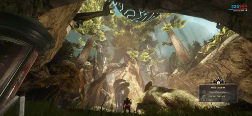
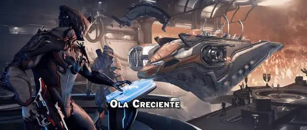

Planifica
Revisa conexiones, capacidad y energía antes de encargar una sala nueva.

El Dojo es la base compartida de un clan: un lugar para reunirse, construir salas, investigar tecnología y preparar nuevas expediciones.
Un Dojo no es solo un punto de encuentro. Sus salas y laboratorios dan acceso a planos y sistemas especiales; el clan puede ampliar y decorar el espacio, colaborar en investigaciones y construir el Dique Seco para trabajar con el Railjack.
El Dojo es una base construida y administrada por los miembros de un clan. Se accede desde la nave personal usando una llave del Dojo, que se fabrica en la Fundición después de unirte o crear un clan. Dentro puedes recorrer las salas, usar sus terminales, reunirte con otros jugadores y visitar las instalaciones que haya construido el clan.
Cada Dojo puede tener una distribución y una decoración distintas. Sus salas se conectan entre sí y se amplían con recursos, así que el aspecto y las instalaciones dependen del trabajo y las decisiones de sus miembros.
Si quieres empezar uno propio, crea un clan desde el menú de comunicación y coloca su primera sala en el Dojo. Como fundador podrás invitar miembros y organizar la construcción y la investigación. Crear un clan en solitario es posible, pero algunas construcciones y proyectos requieren reunir bastantes recursos.
También puedes aceptar una invitación o buscar un clan que tenga espacio disponible. Al unirte, tendrás acceso a su Dojo y podrás contribuir a proyectos compartidos. Antes de elegir, conviene preguntar qué instalaciones tiene y si sus miembros están investigando objetos que te interesan.

Las salas se construyen desde el menú de construcción del Dojo. Cada una ocupa espacio y puede tener requisitos de capacidad y energía; por eso hay que planificar cómo conectarla y comprobar los recursos antes de iniciar la obra. Una vez terminada, puede abrir nuevas rutas o albergar instalaciones importantes.
El clan puede ampliar el Dojo con corredores, salas de reunión, laboratorios y otras habitaciones. También se pueden colocar decoraciones y cambiar el aspecto de los espacios. Estas mejoras amplían las funciones y la personalidad de la base, pero no aumentan directamente las estadísticas del Warframe.
Revisa conexiones, capacidad y energía antes de encargar una sala nueva.
Los miembros pueden aportar recursos para completar las construcciones del clan.
Usa decoraciones para dar identidad a las salas y espacios comunes.
Los laboratorios permiten iniciar investigaciones de equipo y otros planos propios del clan. Entre sus instalaciones están los laboratorios Tenno, de Energía, Químico y Biológico, además de espacios especializados que se pueden construir conforme el clan progresa.
Un miembro con permisos adecuados inicia un proyecto y el clan aporta los materiales requeridos. Cuando la investigación termina, los miembros pueden acceder al plano correspondiente desde el laboratorio. La investigación es compartida: no hace falta que cada persona la repita por separado.
Cuando un proyecto de laboratorio ya está investigado, puedes comprar allí tu copia del plano usando créditos. El plano pasa a ser tuyo y puedes fabricar el objeto en la Fundición si reúnes los materiales y cumples los requisitos. La investigación del clan desbloquea el acceso al plano; no entrega automáticamente el objeto terminado.
El Dojo también puede tener un puesto de intercambio para comerciar con otros jugadores. El intercambio sirve para objetos que el juego permite comerciar y depende de las reglas y requisitos vigentes. Para las construcciones del Dojo, en cambio, los miembros aportan recursos al proyecto común desde sus terminales.
El Dique Seco es una sala especializada del Dojo donde se construye y se gestiona el Railjack. Desde sus consolas puedes continuar el proyecto de la nave, acceder a sus sistemas y prepararte para las misiones de las regiones Proxima.
Para tener un Railjack propio, avanza en la aventura «Mareas Crecientes» y completa las tareas de construcción que aparecen en el Dique. Una vez terminado, podrás embarcarte desde allí y usar las consolas de la nave para revisar componentes y preparativos antes de salir.
El Dique Seco conecta el trabajo del clan con el contenido espacial: se construye como parte del Dojo y sirve como punto de partida para las actividades de Railjack. Para aprender sobre las misiones y el Archwing, continúa en la guía de Railjack y Archwing.
